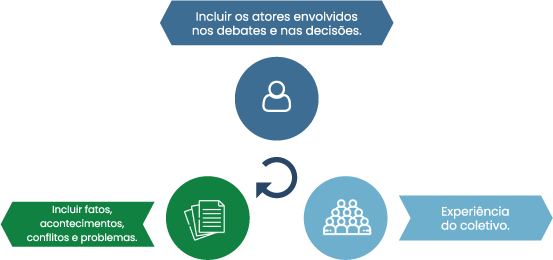

TÓPICO 3
ESTRATÉGIAS PARA PROMOVER UMA GESTÃO PARTICIPATIVA – PARTE 2
TÓPICO 3
ESTRATÉGIAS PARA PROMOVER UMA GESTÃO PARTICIPATIVA – PARTE 2
Método da tríplice inclusão
Clique em cada componente de inclusão para conhecê-lo.
INCLUIR OS ATORES ENVOLVIDOS NOS DEBATES E NAS DECISÕES
Trabalhadores, gestores e usuários precisam ser incluídos nos debates e nas decisões que definem os rumos, as prioridades e a forma como se organizam os serviços de saúde. Essa inclusão tem como componente central a ideia de produção de autonomia, de criar condições para que esses sujeitos sejam protagonistas dos processos e se corresponsabilizem por eles.
x
INCLUIR FATOS, ACONTECIMENTOS, CONFLITOS E PROBLEMAS
A inclusão também diz respeito ao conjunto de fatos, acontecimentos, conflitos e problemas que interferem no cotidiano da saúde. Eles provocam incômodos e interferem nos aspectos do cotidiano sobre os quais não temos o costume de refletir. Muitas vezes, os conflitos e as dificuldades gerados em processos de tensionamento são indicadores da necessidade de mudança. Se, ao invés de tentar acomodar ou silenciar esses analisadores, os colocarmos como objeto de reflexão e análise coletiva, é mais fácil perceber a necessidade de mudança. As crises devem ser consideradas como oportunidades de aprendizado coletivo e transformação das formas de ser e de fazer.
x
EXPERIÊNCIA DO COLETIVO
A nossa sociedade cada vez mais incentiva a forma individualista de compreender o mundo. Essa forma é a principal referência em relação a como percebemos, produzimos significado e sentimos as coisas do dia a dia. Para que uma gestão participativa seja possível, é necessário fazer com que as pessoas envolvidas tenham a experiência de ser um grupo, uma equipe. Assim, a experiência do coletivo acontece quando novas maneiras de perceber e sentir são vivenciadas, possibilitando que as pessoas se sintam em um trabalho grupal. Isso deve acontecer com a construção de redes que extrapolam os muros do serviço de saúde, com a finalidade de gerar interlocução e cooperação com outros grupos e sujeitos, dinâmica muito potente para viabilizar a articulação com o território e a construção de ações intersetoriais.
x